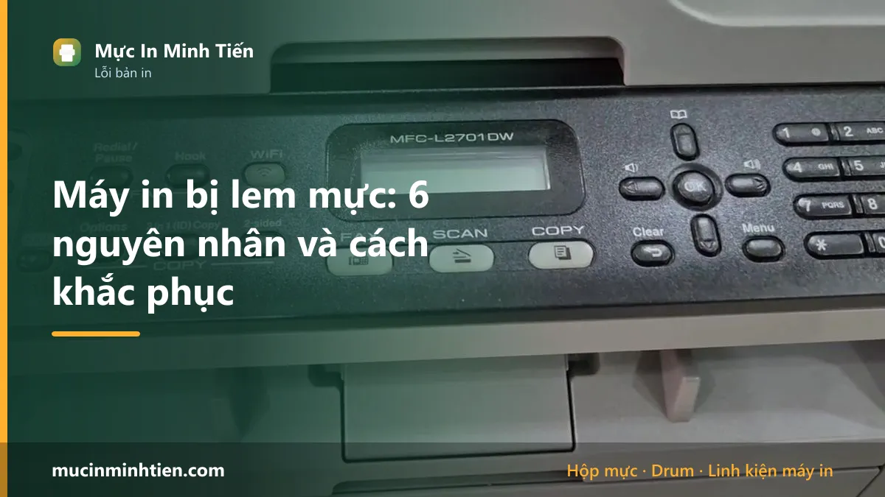
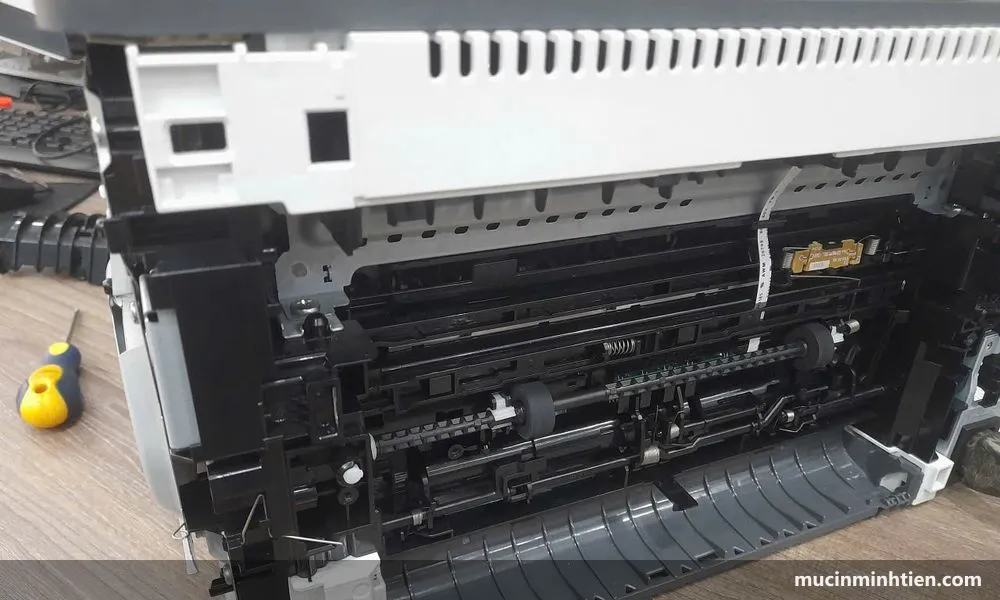

Máy in bị lem mực: 6 nguyên nhân và cách khắc phục

Máy in bị lem mực do sáu nguyên nhân: gạt mực mòn, lô sấy không đủ nhiệt, giấy ẩm, mực bột kém chất lượng, drum xước, hoặc mực rơi vãi trong khoang máy. Cách phân biệt nhanh nhất là chạm tay vào chỗ lem — mực dính ra tay nghĩa là lỗi cụm sấy, mực không dính ra tay thì lỗi nằm trong hộp mực.
Dấu hiệu nhận biết: bốn kiểu lem mực khác nhau
Chữ "lem mực" gộp chung nhiều hiện tượng khác hẳn nhau. Nhận diện đúng kiểu lem là đã đi được nửa đường tới nguyên nhân.
- Lem toàn trang, chạm tay là dính mực ra tay. Mực nằm trên mặt giấy chứ chưa bám vào sợi giấy. Đây là lỗi cụm sấy.
- Lem thành vệt dọc ở mép trang, mực khô không dính tay. Gạt mực đã mòn hoặc mẻ.
- Lem mờ nhòe không đều, giấy hơi cong. Giấy ẩm là nghi phạm số một.
- Lem thành mảng bẩn ngẫu nhiên, có chấm mực rời. Mực rơi vãi trong khoang hoặc hộp mực hở.
Nếu bản in không lem mà có vệt đen chạy dọc rõ nét, đó lại là vấn đề khác — đọc máy in bị sọc đen dọc.
7 nguyên nhân gây lem mực, xếp theo tần suất gặp thật
Thứ tự dưới đây dựa trên các ca chúng tôi nhận tại xưởng, không phải xếp theo lý thuyết. Đọc từ trên xuống sẽ trúng bệnh nhanh nhất.
1. Gạt mực mòn hoặc mẻ — nguyên nhân số một
Gạt mực là lưỡi cao su mỏng tì sát bề mặt drum. Sau mỗi vòng quay, nó gạt sạch lượng mực thừa còn bám lại để đưa về khoang mực thải. Lưỡi gạt làm bằng cao su nên mòn dần theo số vòng quay, và mòn nhanh hơn nhiều nếu dùng mực bột sai chủng loại.
Nhận biết: lem thành vệt dọc ở mép trang, mực khô, không dính tay. Rút hộp mực ra thấy bột mực rơi lả tả.
Vì sao hay bị: nhiều nơi nạp mực chỉ đổ thêm bột mà không kiểm tra gạt. Gạt mòn sẵn thì hộp càng đầy mực càng lem nặng, nên khách thường thấy "vừa nạp xong đã lem".
Xử lý: thay gạt mực. Đây là linh kiện rẻ nhất trong nhóm, và thay sớm còn bảo vệ được drum đắt hơn nhiều.
2. Bao lụa cụm sấy rách hoặc mòn
Bao lụa là màng mỏng bọc quanh thanh nhiệt, truyền nhiệt từ thanh sang giấy để nung chảy mực. Màng này mỏng và chịu nhiệt liên tục nên sau vài chục nghìn trang sẽ mòn, rách hoặc nhăn.
Nhận biết: lem toàn trang, chạm tay là mực dính ra tay. Đôi khi kèm vệt bóng dọc theo chiều giấy đi.
Xử lý: thay bao lụa. Với máy để bàn thông thường, thay riêng bao lụa thường đủ, không phải thay cả cụm sấy.
3. Giấy ẩm — nguyên nhân bị bỏ qua nhiều nhất
Ở khí hậu Việt Nam, một ram giấy để hở vài ngày đã hút đủ ẩm để gây lỗi. Khi đi qua cụm sấy, hơi nước trong sợi giấy bốc lên và cản mực bám vào bề mặt.
Nhận biết: nhòe mờ không đều, giấy ra cong vênh, các tờ trong khay hơi dính nhau. Lỗi nặng hơn vào mùa mưa và ở phòng có máy lạnh chạy liên tục.
Xử lý: đổi ram giấy mới, bảo quản trong bao kín trên kệ cao. Không tốn đồng nào.
4. Mực bột sai chủng loại
Mỗi dòng máy có kích thước hạt mực và nhiệt độ nóng chảy riêng. Mực hạt quá mịn lọt qua khe gạt; mực hạt quá thô hoặc điểm nóng chảy quá cao thì không chảy hết ở nhiệt độ cụm sấy đang có, mực chỉ dính hờ lên giấy.
Nhận biết: máy đang in tốt, chỉ lem sau lần nạp mực gần nhất, và lem đều từ trang đầu tiên chứ không nặng dần.
Xử lý: mang hộp mực về nơi đã nạp để đổi loại mực khác. Đừng vội thay linh kiện khi chưa loại trừ nguyên nhân này.
5. Lô ép mòn hoặc chai cứng
Lô ép là trục cao su ép giấy áp sát vào bao lụa để mực nóng chảy thấm vào sợi giấy. Chai cứng hoặc mòn lõm thì lực ép không đủ và không đều.
Nhận biết: lem đậm ở một dải ngang cố định trên trang, các vùng khác vẫn bám tốt. Có thể kèm giấy ra hơi nhăn.
Xử lý: thay lô ép. Thường đi kèm thay bao lụa vì hai bộ phận này mòn cùng nhau.
6. Drum xước hoặc hết lớp phủ
Drum là trống nhôm phủ lớp cảm quang. Lớp phủ này xước thì mực bám sai chỗ, gây vừa lem vừa sọc.
Nhận biết: lem kèm sọc đen dọc lặp lại đúng chu kỳ cố định — khoảng cách giữa các vệt bằng đúng chu vi drum.
Xử lý: thay drum. Xem thêm cách phân biệt ở bài máy in bị sọc đen dọc.
7. Khoang mực thải đầy hoặc vỏ hộp hở
Mực thừa sau khi gạt được đưa về khoang chứa riêng trong hộp mực. Khoang này đầy mà không được đổ khi nạp mực thì mực trào ngược ra ngoài, rơi xuống giấy và vào lòng máy.
Nhận biết: mảng bẩn ngẫu nhiên kèm chấm mực rời, và có bột mực trong khoang lắp hộp mực.
Xử lý: vệ sinh khoang mực thải khi nạp mực. Nếu vỏ hộp đã nứt thì phải thay hộp — mực rơi vào cụm sấy sẽ gây lem toàn bộ bản in về sau, tốn công vệ sinh hơn nhiều so với tiền hộp mực.
Dòng máy nào hay bị lem mực nhất
Không phải máy nào cũng dễ lem như nhau. Theo các ca chúng tôi xử lý, ba nhóm sau gặp nhiều nhất:
- Máy đời cũ đã nạp mực nhiều lần — HP 1020, Canon 2900 dùng mã hộp mực 12A, HP P1005 dùng 35A. Gạt mực và drum đã qua nhiều chu kỳ, lem là dấu hiệu tới hạn.
- Máy giá rẻ đời mới — HP Laser 107a, 107w, 135w dùng mã 107A. Linh kiện trong hộp mỏng hơn dòng LaserJet cũ nên xuống cấp sau ít lần nạp hơn.
- Máy văn phòng in tải nặng — HP M402, M426 dùng 26A, và các dòng A3. Ở nhóm này lem thường do cụm sấy chứ không do hộp mực, vì cụm sấy chạy liên tục.
Máy photocopy văn phòng cũng hay lem nhưng cơ chế khác: liên quan tới bột từ và cụm mực rời chứ không phải hộp mực liền khối. Nhóm này cần kỹ thuật viên kiểm tra, không tự xử lý được.
Bước 1 — Phép thử chạm tay, mất mười giây
In một trang, đợi nguội khoảng nửa phút rồi miết ngón tay lên vùng có chữ. Kết quả chia đôi toàn bộ hướng xử lý về sau:
- Mực dính ra tay, chữ bị nhoè đi → lỗi cụm sấy. Đi thẳng tới bước 4.
- Mực không dính, chữ vẫn nguyên → mực đã bám chặt, lỗi nằm ở hộp mực hoặc giấy. Đi tiếp bước 2.
Phép thử này quan trọng vì hai nhóm nguyên nhân có chi phí rất khác nhau: hộp mực và gạt là linh kiện rẻ, còn cụm sấy thì đắt hơn nhiều.
Bước 2 — Đổi ram giấy mới, loại trừ nguyên nhân miễn phí
Ở khí hậu Việt Nam, giấy hút ẩm rất nhanh. Giấy ẩm đi qua cụm sấy sẽ bốc hơi nước, hơi nước cản mực bám vào sợi giấy và kết quả là bản in nhòe mờ không đều.
- Lấy một ram giấy mới, chưa mở bao, in thử mười trang.
- Hết nhòe → nguyên nhân là bảo quản giấy, không phải máy hỏng.
- Vẫn nhòe → giấy không phải nguyên nhân, đi tiếp.
Dấu hiệu nhận biết giấy ẩm mà không cần thử: các tờ giấy trong khay hơi cong mép, dính nhau khi tách, hoặc sờ vào thấy mát tay hơn bình thường. Giấy để cạnh cửa sổ, dưới sàn hoặc trong phòng có máy lạnh chạy liên tục đều dễ bị.
Bước 3 — Kiểm tra gạt mực và khoang hộp mực
Gạt mực là lưỡi cao su mỏng nằm sát bề mặt drum, có nhiệm vụ gạt sạch lượng mực thừa sau mỗi vòng quay để đưa về khoang mực thải. Gạt mòn hoặc mẻ thì mực thừa không được gạt hết, tích tụ rồi rơi xuống giấy thành vệt lem.
- Tắt máy, rút hộp mực, đặt lên tờ giấy trắng ở nơi tối.
- Quan sát: có bột mực rơi ra khỏi hộp không? Rơi nhiều nghĩa là gạt đã hỏng hoặc khoang mực thải đã đầy.
- Nhìn vào khe giữa lưỡi gạt và drum. Lưỡi gạt còn tốt thì thẳng, sắc cạnh. Gạt hỏng thì cong, sứt hoặc có vết mẻ.
- Lau sạch bụi mực trong khoang lắp hộp mực bằng khăn khô mềm. Không dùng khăn ướt và không thổi bằng miệng.
- Lắp lại, in thử mười trang.
Nếu mực rơi vãi nhiều trong khoang máy, phải vệ sinh sạch trước khi in tiếp. Mực bám vào lô sấy sẽ chuyển thành lem toàn trang ở mọi bản in về sau, biến một lỗi rẻ thành lỗi đắt.

Bước 4 — Cụm sấy: khi mực chạm tay là ra
Cụm sấy nung mực nóng chảy và ép bám vào sợi giấy. Ba bộ phận trong cụm này có thể hỏng:
- Bao lụa — màng mỏng bọc quanh thanh nhiệt. Rách hoặc mòn thì nhiệt không truyền đều, mực chỗ chảy chỗ không.
- Lô ép — trục cao su ép giấy vào bao lụa. Chai cứng hoặc mòn thì lực ép không đủ.
- Thermistor — cảm biến nhiệt. Báo sai thì máy giữ nhiệt thấp hơn mức cần thiết.
Đây là nhóm linh kiện không nên tự thay tại nhà. Cụm sấy hoạt động ở nhiệt độ cao, tháo sai dễ làm rách bao lụa mới hoặc lệch cảm biến, và có nguy cơ bỏng. Với máy để bàn thông thường, thay riêng bao lụa thường đủ xử lý mà không phải thay cả cụm.
Một dấu hiệu đi kèm đáng chú ý: máy có mùi khét nhẹ khi in. Nếu có, ngắt điện và gọi kỹ thuật viên ngay thay vì in tiếp.
Bước 5 — Loại trừ mực bột kém chất lượng
Mực bột có kích thước hạt tiêu chuẩn cho từng dòng máy. Mực hạt quá mịn sẽ lọt qua khe gạt; mực hạt quá thô không nóng chảy hết ở nhiệt độ cụm sấy đang có. Cả hai đều dẫn tới lem.
Dấu hiệu nghi mực: máy đang in tốt, sau lần nạp mực gần nhất mới bắt đầu lem, và bản in lem đều đặn từ trang đầu tiên. Trường hợp này nên mang hộp mực về nơi đã nạp để đổi loại mực khác, đừng vội thay linh kiện.
Chọn mực đúng loại ngay từ đầu tiết kiệm hơn nhiều so với sửa hậu quả — xem cách chọn mực in đúng máy, bền máy và tiết kiệm và cách phân biệt mực chính hãng với mực trôi nổi.
Bảng tra: kiểu lem nào ứng với bộ phận nào
| Biểu hiện trên bản in | Bộ phận nghi ngờ | Cách xử lý | Chi phí tham khảo |
|---|---|---|---|
| Chạm tay là dính mực, lem toàn trang | Bao lụa hoặc lô ép | Thay bao lụa, nặng thì thay lô ép | từ 50.000 đ |
| Lem vệt dọc ở mép trang, mực khô | Gạt mực mòn hoặc mẻ | Thay gạt mực | từ 20.000 đ |
| Nhòe mờ không đều, giấy cong | Giấy ẩm | Đổi ram giấy mới, bảo quản kín | 0 đ |
| Mảng bẩn ngẫu nhiên, có chấm mực rời | Mực rơi vãi trong khoang | Vệ sinh khoang, kiểm tra vỏ hộp | 0 – 100.000 đ |
| Lem kèm sọc đen dọc lặp lại | Drum xước | Thay drum | từ 39.000 đ |
| Lem đều từ trang đầu, mới sau khi nạp mực | Mực bột sai chủng loại | Đổi loại mực nạp | từ 80.000 đ |
| Lem kèm mùi khét khi in | Cụm sấy quá nhiệt | Ngắt điện, gọi kỹ thuật viên ngay | Cần kiểm tra |
Giá linh kiện tham khảo trong bảng giá 773 mã, chưa gồm công thay. Kho có sẵn bao lụa, lô ép và gạt mực cho hầu hết dòng máy phổ thông — gọi 0915 510 203 kèm model để kiểm tra tồn.
Khi nào nên gọi kỹ thuật viên
- Phép thử chạm tay cho kết quả mực dính ra tay — lỗi cụm sấy, không nên tự tháo.
- Mực rơi vãi nhiều trong lòng máy, cần vệ sinh sâu trước khi in tiếp.
- Máy có mùi khét hoặc phát ra tiếng lạ.
- Đã đổi giấy, vệ sinh khoang, thay gạt mà vẫn lem.
- Máy photocopy văn phòng — cấu tạo phức tạp hơn, tự tháo dễ lệch cụm.
Báo giá xử lý lỗi lem mực tận nơi
| Hạng mục | Áp dụng | Giá tham khảo |
|---|---|---|
| Kiểm tra, vệ sinh khoang mực và đường giấy | Mọi dòng máy | từ 100.000 đ |
| Thay gạt mực | Máy in laser | từ 20.000 đ + công |
| Thay bao lụa | Máy in laser để bàn | từ 50.000 đ + công |
| Thay lô ép | Tùy dòng máy | từ 100.000 đ + công |
| Thay drum | Tùy dòng máy | từ 39.000 đ + công |
| Vệ sinh sâu toàn máy sau khi tràn mực | Mọi dòng máy | từ 150.000 đ |
Kỹ thuật viên kiểm tra và báo giá trước khi làm — xem cam kết đầy đủ ở trang dịch vụ sửa máy in tận nơi TP.HCM.
Cách phòng tránh lem mực tái phát
- Bảo quản giấy trong bao kín, để trên kệ cao, tránh sàn nhà và cửa sổ. Đây là biện pháp rẻ nhất và hiệu quả nhất.
- Chỉ nạp mực đúng chủng loại. Tiết kiệm vài chục nghìn tiền mực có thể đổi lấy tiền thay bao lụa gấp nhiều lần.
- Vệ sinh khoang hộp mực mỗi lần thay mực. Bụi mực tích tụ là nguồn gốc của hầu hết lỗi bẩn bản in.
- Đừng cố in tiếp khi đã lem. Mực thừa sẽ bám dần vào lô sấy, biến lỗi rẻ thành lỗi đắt.
- Thay gạt mực định kỳ khi nạp mực nhiều lần. Gạt là hàng hao mòn, rẻ, và thay sớm bảo vệ được drum đắt hơn.